Topic 25-Part 2: Evaluating Classifiers, Dealing with Class Imbalance, and GridSearchCV#
onl01-dtsc-ft-022221
05/07/21
Announcements#
Blog Post Deadline Extended until Monday at 10 AM EST.
Overview#
Last time:
Types of machine learning.
Supervised vs Unsupervised Learning
Regression vs Classification
From Linear to Logistic Regression - Theory
Applying Logistic Regression with
scikit-learnProper preprocessing with train-test-split.
Evaluating Classifiers
Confusion Matrices
Accuracy, ~~Precision, Recall, F1-Score~~
Today
Classification Metrics
Confusion Matrices
Accuracy, Precision, Recall, F1-Score
ROC-AUC curve
GridSearchCV
Class Imbalance Problems
Questions?#
Reviewing Part 1: Intro to Logistic Regression#
Predict Passenger Survival on the Titanic with scikit-learn#
import matplotlib.pyplot as plt
import seaborn as sns
import pandas as pd
import numpy as np
from sklearn.model_selection import train_test_split
from sklearn.preprocessing import MinMaxScaler,StandardScaler,OneHotEncoder
from sklearn.impute import SimpleImputer
from sklearn.linear_model import Lasso, Ridge, LinearRegression
from sklearn.linear_model import LogisticRegression
from sklearn import metrics
# import statsmodels.api as sm
url = "https://raw.githubusercontent.com/jirvingphd/dsc-dealing-missing-data-lab-online-ds-ft-100719/master/titanic.csv"
df = pd.read_csv(url,index_col=0,na_values='?')
relevant_columns = ['Pclass', 'Age', 'SibSp', 'Fare', 'Sex', 'Embarked', 'Survived']
df = df[relevant_columns]
df.head()
| Pclass | Age | SibSp | Fare | Sex | Embarked | Survived | |
|---|---|---|---|---|---|---|---|
| 0 | 3.0 | 22.0 | 1 | 7.2500 | male | S | 0 |
| 1 | 1.0 | 38.0 | 1 | 71.2833 | female | C | 1 |
| 2 | 3.0 | 26.0 | 0 | 7.9250 | female | S | 1 |
| 3 | 1.0 | 35.0 | 1 | 53.1000 | female | S | 1 |
| 4 | 3.0 | 35.0 | 0 | 8.0500 | male | S | 0 |
df['Survived'].value_counts(normalize=True,dropna=False)
0 0.616162
1 0.383838
Name: Survived, dtype: float64
fig,ax= plt.subplots(ncols=2,figsize=(10,4))
sns.scatterplot(data=df, x='Fare',y='Survived',ax=ax[0])
sns.scatterplot(data=df, x='Age',y='Survived',ax=ax[1])
fig.suptitle('X Features vs Survived')
Text(0.5, 0.98, 'X Features vs Survived')
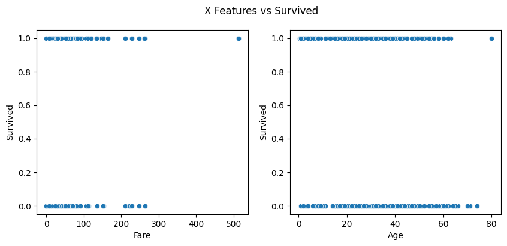
fig,ax= plt.subplots(ncols=2,figsize=(10,4))
sns.regplot(data=df, x='Fare',y='Survived',ax=ax[0])
sns.regplot(data=df, x='Age',y='Survived',ax=ax[1])
fig.suptitle('X Features vs Survived - Regression')
Text(0.5, 0.98, 'X Features vs Survived - Regression')
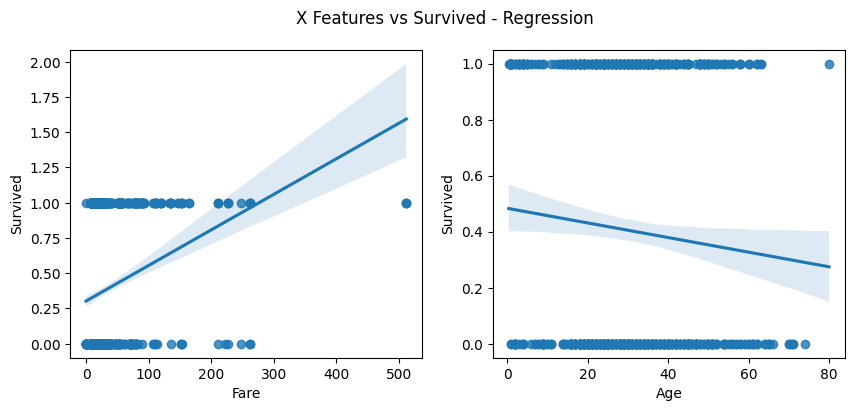
Q: What are the preprocessing steps I need to perform before I create the model?#
Recast data types
Train-test-split
Fill/drop in missing/null values
Feature Selection / Feature Engineering (interaction terms)
Handling categorial variables
One Hot Encoding
Label Encoding
Handling Outliers (maybe)
Normalizing/Standardizing our data
Multicollinearity (does it still matter as much for Logistic?)
## Check out the .info
df.info()
<class 'pandas.core.frame.DataFrame'>
Int64Index: 891 entries, 0 to 890
Data columns (total 7 columns):
# Column Non-Null Count Dtype
--- ------ -------------- -----
0 Pclass 842 non-null float64
1 Age 714 non-null float64
2 SibSp 891 non-null int64
3 Fare 891 non-null float64
4 Sex 891 non-null object
5 Embarked 889 non-null object
6 Survived 891 non-null int64
dtypes: float64(3), int64(2), object(2)
memory usage: 55.7+ KB
## Check Object cols value_counts
display(df['Embarked'].value_counts(dropna=False),
df['Sex'].value_counts(dropna=False))
S 644
C 168
Q 77
NaN 2
Name: Embarked, dtype: int64
male 577
female 314
Name: Sex, dtype: int64
Preprocessing#
## Separate X and y and train-test-split
target = 'Survived'
y = df[target]
X = df.drop(target, axis=1)
# Perform test train split
X_train , X_test, y_train, y_test = train_test_split(X, y, test_size=0.3,)
## Check for nulls in training set
X_train.isna().sum()
Pclass 29
Age 124
SibSp 0
Fare 0
Sex 0
Embarked 2
dtype: int64
df['Pclass'].value_counts(normalize=True,dropna=False)
3.0 0.526375
1.0 0.225589
2.0 0.193042
NaN 0.054994
Name: Pclass, dtype: float64
df['Embarked'].value_counts(normalize=True,dropna=False)
S 0.722783
C 0.188552
Q 0.086420
NaN 0.002245
Name: Embarked, dtype: float64
pclass_counts = dict(X_train['Pclass'].value_counts(normalize=True))
pclass_counts
{3.0: 0.5555555555555556, 1.0: 0.234006734006734, 2.0: 0.21043771043771045}
🚩Part 2 Update re filling nulls using class balances/prob:#
### Filling in from sample distribution is easier than what i was doing yesterday.
p_class = X_train['Pclass'].fillna(np.random.choice(list(pclass_counts.keys()),
p=list(pclass_counts.values())))
p_class.isna().sum()
0
p_class.value_counts()
3.0 330
2.0 154
1.0 139
Name: Pclass, dtype: int64
Original Part 1 Continued#
X_train['Pclass'].value_counts(dropna=False)
3.0 330
1.0 139
2.0 125
NaN 29
Name: Pclass, dtype: int64
SimpleImputer()
SimpleImputer()
## Specify which values to impute with which method
## Most frequent
mode_cols =['Pclass','Embarked']
## Fill with median
median_cols = ['Age']
## Copying X_train and X_test as start of X_train_tf,X_test_tf
X_train_tf = X_train.copy()
X_test_tf = X_test.copy()
## Impute the columns with most-frequent value
impute_mode = SimpleImputer(strategy='most_frequent')
X_train_tf[mode_cols] = impute_mode.fit_transform(X_train_tf[mode_cols])
X_test_tf[mode_cols] = impute_mode.transform(X_test_tf[mode_cols])
## Verify it worked
X_train_tf.isna().sum()
Pclass 0
Age 124
SibSp 0
Fare 0
Sex 0
Embarked 0
dtype: int64
## Impute the columns with most-frequent value
impute_median = SimpleImputer(strategy='median')
X_train_tf[median_cols] = impute_median.fit_transform(X_train_tf[median_cols])
X_test_tf[median_cols] = impute_median.transform(X_test_tf[median_cols])
## Verify it worked
X_train_tf.isna().sum(), X_test_tf.isna().sum()
(Pclass 0
Age 0
SibSp 0
Fare 0
Sex 0
Embarked 0
dtype: int64,
Pclass 0
Age 0
SibSp 0
Fare 0
Sex 0
Embarked 0
dtype: int64)
X_train_tf['Pclass'] = X_train_tf['Pclass'].astype(str)
X_test_tf['Pclass'] = X_test_tf['Pclass'].astype(str)
X_train_tf
| Pclass | Age | SibSp | Fare | Sex | Embarked | |
|---|---|---|---|---|---|---|
| 81 | 3.0 | 29.0 | 0 | 9.5000 | male | S |
| 754 | 3.0 | 48.0 | 1 | 65.0000 | female | S |
| 689 | 1.0 | 15.0 | 0 | 211.3375 | female | S |
| 621 | 1.0 | 42.0 | 1 | 52.5542 | male | S |
| 440 | 2.0 | 45.0 | 1 | 26.2500 | female | S |
| ... | ... | ... | ... | ... | ... | ... |
| 783 | 3.0 | 28.0 | 1 | 23.4500 | male | S |
| 766 | 1.0 | 28.0 | 0 | 39.6000 | male | C |
| 176 | 3.0 | 28.0 | 3 | 25.4667 | male | S |
| 135 | 2.0 | 23.0 | 0 | 15.0458 | male | C |
| 388 | 3.0 | 28.0 | 0 | 7.7292 | male | Q |
623 rows × 6 columns
## Specifing which cols to encode and which to scale.
# make cat_cols and num_cols
cat_cols = X_train_tf.select_dtypes('O').columns
num_cols = X_train_tf.select_dtypes('number').columns
num_cols,cat_cols
(Index(['Age', 'SibSp', 'Fare'], dtype='object'),
Index(['Pclass', 'Sex', 'Embarked'], dtype='object'))
## Encode cat_cols
encoder = OneHotEncoder(sparse=False,drop='first')
train_cat_cols = encoder.fit_transform(X_train_tf[cat_cols])
test_cat_cols = encoder.transform(X_test_tf[cat_cols])
train_cat_cols
array([[0., 1., 1., 0., 1.],
[0., 1., 0., 0., 1.],
[0., 0., 0., 0., 1.],
...,
[0., 1., 1., 0., 1.],
[1., 0., 1., 0., 0.],
[0., 1., 1., 1., 0.]])
train_cat_cols = pd.DataFrame(train_cat_cols,columns=encoder.get_feature_names(cat_cols))
test_cat_cols = pd.DataFrame(test_cat_cols,columns=encoder.get_feature_names(cat_cols))
test_cat_cols
/opt/homebrew/Caskroom/miniforge/base/envs/dojo-env/lib/python3.8/site-packages/sklearn/utils/deprecation.py:87: FutureWarning: Function get_feature_names is deprecated; get_feature_names is deprecated in 1.0 and will be removed in 1.2. Please use get_feature_names_out instead.
warnings.warn(msg, category=FutureWarning)
/opt/homebrew/Caskroom/miniforge/base/envs/dojo-env/lib/python3.8/site-packages/sklearn/utils/deprecation.py:87: FutureWarning: Function get_feature_names is deprecated; get_feature_names is deprecated in 1.0 and will be removed in 1.2. Please use get_feature_names_out instead.
warnings.warn(msg, category=FutureWarning)
| Pclass_2.0 | Pclass_3.0 | Sex_male | Embarked_Q | Embarked_S | |
|---|---|---|---|---|---|
| 0 | 0.0 | 1.0 | 0.0 | 1.0 | 0.0 |
| 1 | 0.0 | 0.0 | 0.0 | 0.0 | 0.0 |
| 2 | 0.0 | 0.0 | 0.0 | 0.0 | 1.0 |
| 3 | 0.0 | 0.0 | 1.0 | 0.0 | 1.0 |
| 4 | 0.0 | 1.0 | 1.0 | 1.0 | 0.0 |
| ... | ... | ... | ... | ... | ... |
| 263 | 1.0 | 0.0 | 1.0 | 0.0 | 0.0 |
| 264 | 0.0 | 1.0 | 0.0 | 0.0 | 1.0 |
| 265 | 1.0 | 0.0 | 1.0 | 0.0 | 1.0 |
| 266 | 0.0 | 1.0 | 1.0 | 0.0 | 1.0 |
| 267 | 1.0 | 0.0 | 0.0 | 0.0 | 1.0 |
268 rows × 5 columns
## Scaling Num_cols
scaler = StandardScaler()
train_num_cols = pd.DataFrame(scaler.fit_transform(X_train_tf[num_cols]),
columns=num_cols)
test_num_cols = pd.DataFrame(scaler.transform(X_test_tf[num_cols]),
columns=num_cols)
train_num_cols
| Age | SibSp | Fare | |
|---|---|---|---|
| 0 | -0.021519 | -0.461658 | -0.447220 |
| 1 | 1.428456 | 0.407263 | 0.614315 |
| 2 | -1.089921 | -0.461658 | 3.413279 |
| 3 | 0.970569 | 0.407263 | 0.376267 |
| 4 | 1.199513 | 0.407263 | -0.126847 |
| ... | ... | ... | ... |
| 618 | -0.097833 | 0.407263 | -0.180402 |
| 619 | -0.097833 | -0.461658 | 0.128496 |
| 620 | -0.097833 | 2.145105 | -0.141829 |
| 621 | -0.479406 | -0.461658 | -0.341147 |
| 622 | -0.097833 | -0.461658 | -0.481090 |
623 rows × 3 columns
## Combine Num and Cat Cols
X_train_tf = pd.concat([train_num_cols,train_cat_cols],axis=1)
X_test_tf = pd.concat([test_num_cols,test_cat_cols],axis=1)
X_test_tf
| Age | SibSp | Fare | Pclass_2.0 | Pclass_3.0 | Sex_male | Embarked_Q | Embarked_S | |
|---|---|---|---|---|---|---|---|---|
| 0 | -0.097833 | 0.407263 | -0.332460 | 0.0 | 1.0 | 0.0 | 1.0 | 0.0 |
| 1 | -0.860978 | 1.276184 | 4.389461 | 0.0 | 0.0 | 0.0 | 0.0 | 0.0 |
| 2 | -0.555720 | -0.461658 | 2.269737 | 0.0 | 0.0 | 0.0 | 0.0 | 1.0 |
| 3 | 0.970569 | 0.407263 | 0.365667 | 0.0 | 0.0 | 1.0 | 0.0 | 1.0 |
| 4 | -0.097833 | -0.461658 | -0.480692 | 0.0 | 1.0 | 1.0 | 1.0 | 0.0 |
| ... | ... | ... | ... | ... | ... | ... | ... | ... |
| 263 | -2.158324 | -0.461658 | 0.078846 | 1.0 | 0.0 | 1.0 | 0.0 | 0.0 |
| 264 | -0.403091 | -0.461658 | -0.459653 | 0.0 | 1.0 | 0.0 | 0.0 | 1.0 |
| 265 | 0.207425 | -0.461658 | -0.428093 | 1.0 | 0.0 | 1.0 | 0.0 | 1.0 |
| 266 | -0.632035 | -0.461658 | -0.478699 | 0.0 | 1.0 | 1.0 | 0.0 | 1.0 |
| 267 | 1.199513 | -0.461658 | -0.370713 | 1.0 | 0.0 | 0.0 | 0.0 | 1.0 |
268 rows × 8 columns
X_train_tf.describe().round(2)
| Age | SibSp | Fare | Pclass_2.0 | Pclass_3.0 | Sex_male | Embarked_Q | Embarked_S | |
|---|---|---|---|---|---|---|---|---|
| count | 623.00 | 623.00 | 623.00 | 623.0 | 623.00 | 623.00 | 623.00 | 623.00 |
| mean | 0.00 | -0.00 | -0.00 | 0.2 | 0.58 | 0.66 | 0.08 | 0.72 |
| std | 1.00 | 1.00 | 1.00 | 0.4 | 0.49 | 0.47 | 0.28 | 0.45 |
| min | -2.18 | -0.46 | -0.63 | 0.0 | 0.00 | 0.00 | 0.00 | 0.00 |
| 25% | -0.56 | -0.46 | -0.48 | 0.0 | 0.00 | 0.00 | 0.00 | 0.00 |
| 50% | -0.10 | -0.46 | -0.35 | 0.0 | 1.00 | 1.00 | 0.00 | 1.00 |
| 75% | 0.44 | 0.41 | -0.03 | 0.0 | 1.00 | 1.00 | 0.00 | 1.00 |
| max | 3.87 | 6.49 | 9.17 | 1.0 | 1.00 | 1.00 | 1.00 | 1.00 |
Fitting a Logistic Regression with scikit-learn#
## Fit a logistic regression model with defaults
log_reg = LogisticRegression(C=1e12)
log_reg.fit(X_train_tf,y_train)
LogisticRegression(C=1000000000000.0)
## Get the model's .score for training and test set
print(f"Training Score:\t{log_reg.score(X_train_tf,y_train):.2f}")
print(f"Test Score:\t{log_reg.score(X_test_tf,y_test):.2f}")
Training Score: 0.82
Test Score: 0.75
### Getting our model's coefficients
## Our function from last class
def get_coefficients(model,X_train):
coeffs = pd.Series(model.coef_.flatten(), index=X_train.columns)
coeffs['intercept'] = model.intercept_[0]
return coeffs
## get the model's coefficients
get_coefficients(log_reg,X_train_tf)
Age -0.365370
SibSp -0.511761
Fare 0.260204
Pclass_2.0 -0.860555
Pclass_3.0 -1.633595
Sex_male -2.832773
Embarked_Q 0.131231
Embarked_S -0.294248
intercept 2.505123
dtype: float64
## Get Predictions for training and test data to check metrics functions
y_hat_train = log_reg.predict(X_train_tf)
y_hat_test = log_reg.predict(X_test_tf)
## Try accuracy_score
metrics.accuracy_score(y_test,y_hat_test)
0.753731343283582
How do I know if my accuracy score is good?#
Does your model predict better than chance/just getting the class distribution?
Compare your accuracy to your normalized value counts for y
Compare your model against a
DummyClassifier(https://scikit-learn.org/stable/modules/generated/sklearn.dummy.DummyClassifier.html)
## Check the class balance for the y_train
y_train.value_counts(normalize=True)
0 0.624398
1 0.375602
Name: Survived, dtype: float64
## Check the class balance for y_test
y_test.value_counts(normalize=True)
0 0.597015
1 0.402985
Name: Survived, dtype: float64
from sklearn.dummy import DummyClassifier
## Make and fit dummy classifier
model = DummyClassifier(strategy='stratified')
model.fit(X_train_tf,y_train)
model.score(X_test_tf,y_test)
0.503731343283582
## Get the model's .score
print(f"Training Score:\t{model.score(X_train_tf,y_train):.2f}")
print(f"Test Score:\t{model.score(X_test_tf,y_test):.2f}")
Training Score: 0.51
Test Score: 0.54
## Check the confusion matrix
metrics.plot_confusion_matrix(model, X_test_tf,y_test,cmap='Reds',normalize='true')
/opt/homebrew/Caskroom/miniforge/base/envs/dojo-env/lib/python3.8/site-packages/sklearn/utils/deprecation.py:87: FutureWarning: Function plot_confusion_matrix is deprecated; Function `plot_confusion_matrix` is deprecated in 1.0 and will be removed in 1.2. Use one of the class methods: ConfusionMatrixDisplay.from_predictions or ConfusionMatrixDisplay.from_estimator.
warnings.warn(msg, category=FutureWarning)
<sklearn.metrics._plot.confusion_matrix.ConfusionMatrixDisplay at 0x1698f9130>
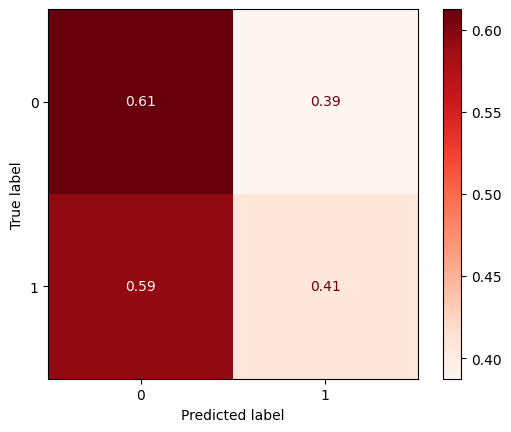
But accuracy isn’t the best metric when you have imbalanced classes.
Next class we will introduce more classification metrics
🚩Revisiting Question from Part 1: Interpreting LogisticRegresion Coefficients#
Resources:#
From Central Lecturer logistic_regression.ipynb Notebook ):
#
The sigmoid function.
$\(\large\hat{y} = \Large\frac{1}{1 + e^{-\hat{L}}} \large= \Large\frac{1}{1 + e^{-(\beta_0 + ... + \beta_nx_n)}}\)$
How do we fit a line to our dependent variable if its values are already stored as probabilities?
We can use the inverse of the sigmoid function, and just set our regression equation equal to that.
The inverse of the sigmoid function is called the logit function, and it looks like this:
Notice that the domain of this function is \((0, 1)\).
From the Medium Blog Post on Interpreting Linear Regression and Logistic Regression Coefficients#
“Because of the logit function, logistic regression coefficients represent the log odds that an observation is in the target class (“1”) given the values of its X variables. Thus, these log odd coefficients need to be converted to regular odds in order to make sense of them. Happily, this is done by simply exponentiating the log odds coefficients, which you can do with np.exp()”
- Blog Post
coeffs = get_coefficients(log_reg,X_train_tf)
coeffs
Age -0.365370
SibSp -0.511761
Fare 0.260204
Pclass_2.0 -0.860555
Pclass_3.0 -1.633595
Sex_male -2.832773
Embarked_Q 0.131231
Embarked_S -0.294248
intercept 2.505123
dtype: float64
## Odds are how much more likely to fall into 1 class than 0 class
## convert log-odds to odds using np.exp
odds = np.exp(coeffs)
odds
Age 0.693940
SibSp 0.599439
Fare 1.297194
Pclass_2.0 0.422927
Pclass_3.0 0.195226
Sex_male 0.058849
Embarked_Q 1.140231
Embarked_S 0.745092
intercept 12.245063
dtype: float64
Interpreting Odds Coefficients#
“For every one-unit increase in [X variable], the odds that the observation is in (y class) are [coefficient] times as large as the odds that the observation is not in (y class) (when all other variables are held constant).”
For “Age”=0.56:
For every 1 sd increase in Age, the odds that the person Survived (class=1) are 0.56 x as large as the odds the person died.
For Fare = 1.24:
For every increase of 1sd in Fare the odds the person Survived are 1.2 times the odds that they died.
For Sex_male=0.07
The odds that a male survives is 0.07 times greater than the odds they died.
For Females (1-Sex_male) = .91
The odds that a female survived is .91 times greater than the odds they died.
Converting to Probability#
And so the logit function represents the log-odds of success (y=1).
## convert odds to prob
prob = odds/(1+odds)
prob
Age 0.409660
SibSp 0.374781
Fare 0.564686
Pclass_2.0 0.297223
Pclass_3.0 0.163338
Sex_male 0.055579
Embarked_Q 0.532761
Embarked_S 0.426964
intercept 0.924500
dtype: float64
## update function to return
def get_coefficients(model,X_train,units = "log-odds"):
"""Returns model coefficients.
Args:
model: sklearn model with the .coef_ attribute.
X_train: dataframe with the feature names as the .columns
units (str): Can be ['log-odds','odds','prob']
"""
options = ['log-odds','odds','prob']
if units not in options:
raise Exception(f'units must be one of {options}')
coeffs = pd.Series(model.coef_.flatten(), index=X_train.columns)
coeffs['intercept'] = model.intercept_[0]
if units=='odds':
coeffs = np.exp(coeffs)
elif units=='prob':
coeffs = np.exp(coeffs)
coeffs = coeffs/(1+coeffs)
coeffs.name=units
return coeffs
coeffs_odds = get_coefficients(log_reg,X_train_tf,units='odds')
coeffs_odds
Age 0.693940
SibSp 0.599439
Fare 1.297194
Pclass_2.0 0.422927
Pclass_3.0 0.195226
Sex_male 0.058849
Embarked_Q 1.140231
Embarked_S 0.745092
intercept 12.245063
Name: odds, dtype: float64
Part 2: Evaluating Classifiers, Dealing with Class Imbalance, and GridSearchCV#
05/07/21
Confusion Matrices: Understanding Our Model’s Mistakes#
For classification tasks, it can be extremely helpful to examine a “Confusion Matrix” to understand how our model is wrong.
## Use metrics.confusion_matrix
metrics.confusion_matrix(y_test,y_hat_test)
array([[133, 27],
[ 39, 69]])
## Use metrics.plot_confusion_matrix
metrics.plot_confusion_matrix(log_reg, X_test_tf,y_test,cmap='Blues')#,
# display_labels=["Died",'Survived'])
/opt/homebrew/Caskroom/miniforge/base/envs/dojo-env/lib/python3.8/site-packages/sklearn/utils/deprecation.py:87: FutureWarning: Function plot_confusion_matrix is deprecated; Function `plot_confusion_matrix` is deprecated in 1.0 and will be removed in 1.2. Use one of the class methods: ConfusionMatrixDisplay.from_predictions or ConfusionMatrixDisplay.from_estimator.
warnings.warn(msg, category=FutureWarning)
<sklearn.metrics._plot.confusion_matrix.ConfusionMatrixDisplay at 0x1698f6a90>
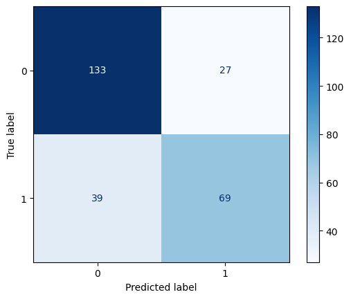
The Confusion Matrix separated out the correct (true) predictions for the positive class (1) and negative class (0).
[TN,FP],
[FN,TP]
True Positives (TP): The number of observations where the model predicted the person has the disease (1), and they actually do have the disease (1).
True Negatives (TN): The number of observations where the model predicted the person is healthy (0), and they are actually healthy (0).
False Positives (FP): The number of observations where the model predicted the person has the disease (1), but they are actually healthy (0).
False Negatives (FN): The number of observations where the model predicted the person is healthy (0), but they actually have the disease (1).
metrics.plot_confusion_matrix(log_reg, X_test_tf,y_test,cmap='Blues',normalize='true')#,
/opt/homebrew/Caskroom/miniforge/base/envs/dojo-env/lib/python3.8/site-packages/sklearn/utils/deprecation.py:87: FutureWarning: Function plot_confusion_matrix is deprecated; Function `plot_confusion_matrix` is deprecated in 1.0 and will be removed in 1.2. Use one of the class methods: ConfusionMatrixDisplay.from_predictions or ConfusionMatrixDisplay.from_estimator.
warnings.warn(msg, category=FutureWarning)
<sklearn.metrics._plot.confusion_matrix.ConfusionMatrixDisplay at 0x169826520>
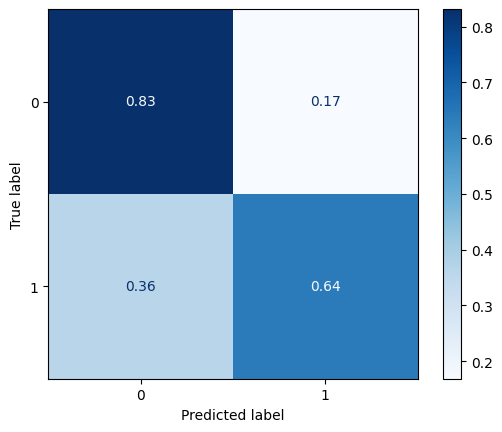
Evaluation Metrics#
Classification Metrics are based on the confusion matrices of our model
[TN,FP],
[FN,TP]
## Remake the conf matrix (raw counts)
cm = metrics.confusion_matrix(y_test,y_hat_test)
cm
array([[133, 27],
[ 39, 69]])
## SLice out TN/FP/etc from cm
TN = cm[0,0]
FP = cm[0,1]
FN = cm[1,0]
TP = cm[1,1]
## Make sure we got the order right
print(TN,FP)
print(FN,TP)
133 27
39 69
Accuracy#
“Out of all the predictions our model made, what percentage were correct?”
“Accuracy is the most common metric for classification. It provides a solid holistic view of the overall performance of our model.”
When to use?#
Accuracy is good for non-technical audiences (but can be misleading with imbalanced classes)
## calcualte accuracy manually
acc = (TP+TN)/(TP+TN+FP+FN)
acc
0.753731343283582
## compare against the accuracy_score
metrics.accuracy_score(y_test,y_hat_test)
0.753731343283582
Precision#
“Precision measures what proportion of predicted Positives is truly Positive?
When to use?#
Use precision when the cost of acting is high and acting on a positive is costly.
e.g. Allocating resources/interventions for prisoners who are at-risk for recidivism.
metrics.precision_score(y_test, y_hat_test)
0.71875
prec = TP/(FP+TP)
prec
0.71875
Recall (AKA Sensitivity)#
Recall indicates what percentage of the classes we’re interested in were actually captured by the model.” $\( \large \text{Recall} = \frac{\text{Number of True Positives}}{\text{Number of Actual Total Positives}} \)$
When to use?#
Use recall when the number of true positives/opportunities is small and you don’t want to miss one.
e.g. cancer diagnosis. (telling someone they do not have cancer when they actually do is fatal)
metrics.recall_score(y_test, y_hat_test)
0.6388888888888888
rec = TP /(TP+FN)
rec
0.6388888888888888
Sensitivity vs Specificity#
Sensitivity(True Positive rate) measures the proportion of positives that are correctly identified
Specificity (True Negative rate) measures the proportion of negatives that are correctly identified
Note that in binary classification, recall of the positive class is also known as “sensitivity”; recall of the negative class is “specificity”.
print(metrics.classification_report(y_test,y_hat_test))
precision recall f1-score support
0 0.77 0.83 0.80 160
1 0.72 0.64 0.68 108
accuracy 0.75 268
macro avg 0.75 0.74 0.74 268
weighted avg 0.75 0.75 0.75 268
## for binary classification, can get Specifity from 0 class's recall.
report = metrics.classification_report(y_test,y_hat_test,output_dict=True)
sensitivty = report['1']['recall']
specificity = report['0']['recall']
sensitivty
0.6388888888888888
specificity
0.83125
\(F_1\) Score#
F1 score represents the Harmonic Mean of Precision and Recall. In short, this means that the F1 score cannot be high without both precision and recall also being high. When a model’s F1 score is high, you know that your model is doing well all around.
Harmonic Mean: “the reciprocal of the arithmetic mean of the reciprocals of a given set of observatins.” - Wikipedia
Arithmetic Mean:#
Harmonic Mean:#
The formula for F1 score is:
\[ \text{F1 score} = \frac{2}{\text{Precision}^{-1}\ x\ \text{Recall}^{-1}}= 2\ \frac{\text{Precision}\ x\ \text{Recall}}{\text{Precision} + \text{Recall}} \]
When to use?#
F1 score is really the most informative about overall model quality.
BUT is the most difficult to express to a non-tech audience
f1_score = 2*prec*rec / (prec + rec)
print(f1_score)
0.676470588235294
metrics.f1_score(y_test,y_hat_test)
0.676470588235294
Which metric to use?#
When in doubt, use them all! -
metrics.classification_report
print(metrics.classification_report(y_test,y_hat_test,target_names=['Died','Survived']))
precision recall f1-score support
Died 0.77 0.83 0.80 160
Survived 0.72 0.64 0.68 108
accuracy 0.75 268
macro avg 0.75 0.74 0.74 268
weighted avg 0.75 0.75 0.75 268
But some good rules of thumb:
Accuracy is good for non-technical audiences (but can be misleading with imbalanced classes)
Use recall when the number of true positives/opportunities is small and you don’t want to miss one.
e.g. cancer diagnosis. (telling someone they do not have cancer when they actually do is fatal)
Use precision when the cost of acting is high and acting on a positive is costly.
e.g. Allocating resources/interventions for prisoners who are at-risk for recidivism.
F1 score is really the most informative about overall model quality, but is the most difficult to express to a non-tech audience
ROC Curve - Receiver Operating Characteristic Curve#
Graph Interpretation#
ROC Curves plot the True Positive Rate (TPR) vs the False Positive Rate(FPR) at various thresholds
TPR = TP / (TP+FN)
FPR = FP / (FP+TN)
The higher the area under the roc curve is another metric we can use to evaluate our model.
## Calc TPR and FPR
TPR = TP / (TP+FN)
FPR = FP / (FP+TN)
TPR,FPR
(0.6388888888888888, 0.16875)
metrics.plot_roc_curve(log_reg,X_test_tf,y_test)
/opt/homebrew/Caskroom/miniforge/base/envs/dojo-env/lib/python3.8/site-packages/sklearn/utils/deprecation.py:87: FutureWarning: Function plot_roc_curve is deprecated; Function :func:`plot_roc_curve` is deprecated in 1.0 and will be removed in 1.2. Use one of the class methods: :meth:`sklearn.metric.RocCurveDisplay.from_predictions` or :meth:`sklearn.metric.RocCurveDisplay.from_estimator`.
warnings.warn(msg, category=FutureWarning)
<sklearn.metrics._plot.roc_curve.RocCurveDisplay at 0x169b15d60>
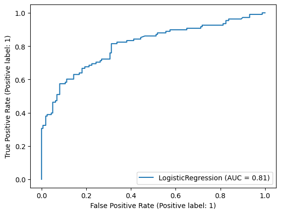
False Positive Rate vs True Positive Rate → for each threshold

## We can use the AUC to judge how good the model is (higher AUC the better)
# but it needs something new: y_score.
# metrics.roc_auc_score()
## Get y_score or y_score_prob from the log_reg decision function / predict proba
y_score = log_reg.decision_function(X_test_tf)
y_score[:5]
array([ 0.74357503, 3.30875015, 3.24077075, -1.0897885 , -1.68308861])
y_score_probs = log_reg.predict_proba(X_test_tf)[:,1]
y_score_probs[0]
0.6777771211217023
fpr,tpr,thresh = metrics.roc_curve(y_test,y_score_probs)
fpr[:5]
array([0. , 0. , 0. , 0.00625, 0.00625])
# Scikit-learn's built in roc_curve method returns the fpr, tpr, and threshold
# for various decision boundaries given the case member probabilites
fpr,tpr,thresh = metrics.roc_curve(y_test,y_score)
fpr[:5]
array([0. , 0. , 0. , 0.00625, 0.00625])
thresh
array([ 4.30875015, 3.30875015, 1.43410686, 1.42353776, 1.38903058,
1.3448656 , 1.14987121, 1.14968458, 1.14960147, 1.14085615,
1.11551036, 1.11508651, 0.97464746, 0.9493518 , 0.94618038,
0.90527335, 0.86262551, 0.8079793 , 0.76892706, 0.74357503,
0.72569892, 0.7023252 , 0.6919555 , 0.67298124, 0.64520176,
0.42375087, 0.28794849, 0.15683446, 0.11833605, -0.04648527,
-0.14284438, -0.2166576 , -0.24255428, -0.27913286, -0.28234035,
-0.30252408, -0.30440072, -0.40765726, -0.47218789, -0.52166121,
-0.59965733, -0.69766805, -0.75819119, -0.85965491, -0.96788081,
-0.97563551, -1.04149045, -1.15565787, -1.16206425, -1.30691033,
-1.30939876, -1.43711843, -1.47162561, -1.64961337, -1.64963427,
-1.68308861, -1.78612742, -1.79549387, -1.80952922, -1.81262803,
-1.81691139, -1.82402653, -1.85125866, -1.85689467, -1.86596659,
-1.90998561, -1.91189324, -1.94919308, -1.9774986 , -2.05267689,
-2.08045638, -2.08095209, -2.08454138, -2.09985783, -2.1078417 ,
-2.17678177, -2.19134538, -2.19775078, -2.21958075, -2.30685888,
-2.32931252, -2.4237942 , -2.46947406, -2.52566592, -2.58108532,
-3.03623393, -3.07257253, -3.74676229])
metrics.auc(fpr, tpr)
0.8078703703703703
metrics.roc_auc_score(y_test,y_score)
0.8078703703703703
## Plot The ROC Curve
fig, ax = plt.subplots(nrows=1,figsize=(6,4))
# ax =axes[0]
## PLot fpt vs tpr
ax.plot(fpr,tpr, label=f'ROC CURVE AUC={round(metrics.auc(fpr, tpr),2)}')
## Plot a diagnonal line to indicate worthless model
ax.plot([0,1],[0,1],ls=':',)
## Properly Label axes and title figure
ax.set(xlabel='False Positive Rate',ylabel='True Positie Rate')
## Add legend and grid
ax.legend()
ax.grid()
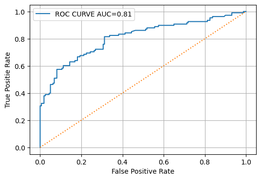
[a if a else 2 for a in [0,1,0,3]] [2, 1, 2, 3]
probs = log_reg.predict_proba(X_test_tf)[:,1]
preds = [1 if x > 0.7 else 0 for x in probs ]
preds[:5]
# preds = []
# for x in probs:
# if x>0.7:
# preds.append(1)
# else:
# preds.append(0)
# print(metrics.classification_report(y_test, preds))
[0, 1, 1, 0, 0]
## Using sklearn's built-in andn making it match ours above
curve = metrics.plot_roc_curve(log_reg,X_test_tf,y_test)
curve.ax_.grid()
curve.ax_.plot([0,1],[0,1],ls=':')
/opt/homebrew/Caskroom/miniforge/base/envs/dojo-env/lib/python3.8/site-packages/sklearn/utils/deprecation.py:87: FutureWarning: Function plot_roc_curve is deprecated; Function :func:`plot_roc_curve` is deprecated in 1.0 and will be removed in 1.2. Use one of the class methods: :meth:`sklearn.metric.RocCurveDisplay.from_predictions` or :meth:`sklearn.metric.RocCurveDisplay.from_estimator`.
warnings.warn(msg, category=FutureWarning)
[<matplotlib.lines.Line2D at 0x169c52040>]
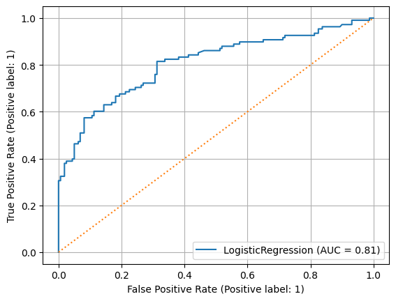
Activity: Make an evaluate_classification function#
Write a function called
evaluate_classificationIt should accept (at minimum):
model (sklearn model)
X_test
y_test
Ideally you should also accept X_train and y_train to compare results to check for overfitting. ?
It should produce:
Classification metrics printed
Confusion Matrix displayed
roc_auc curve displayed
Then revisit some of the questions we had from last class re: scaling, LogisticRegression parameters
def evaluate_classification(log_reg,X_test_tf,y_test,cmap='Reds',
normalize='true',classes=None,figsize=(8,4)):
y_hat_test = log_reg.predict(X_test_tf)
print(metrics.classification_report(y_test, y_hat_test,target_names=classes))
fig,ax = plt.subplots(ncols=2,figsize=figsize)
metrics.plot_confusion_matrix(log_reg, X_test_tf,y_test,cmap=cmap,
normalize=normalize,display_labels=classes,
ax=ax[0])
curve = metrics.plot_roc_curve(log_reg,X_test_tf,y_test,ax=ax[1])
curve.ax_.grid()
curve.ax_.plot([0,1],[0,1],ls=':')
import sklearn.metrics as metrics
def evaluate_classification(model,X_test,y_test,classes=None,
normalize='true',cmap="Blues",figsize=(10,5),
return_fig=False):
## Get Predictions
y_hat_test = model.predict(X_test)
## Classification Report / Scores
dashes = '---'*20
print(dashes)
print("[i] CLASSIFICATION REPORT")
print(dashes)
print(metrics.classification_report(y_test,y_hat_test,
target_names=classes))
print(dashes)
fig, axes = plt.subplots(ncols=2,
figsize=figsize)
## Confusion Matrix
metrics.plot_confusion_matrix(model, X_test,
y_test,normalize=normalize,
display_labels=classes,
cmap=cmap,ax=axes[0])
## Plot ROC Curve
metrics.plot_roc_curve(model,X_test,y_test,ax=axes[1])
ax = axes[1]
ax.legend()
ax.plot([0,1],[0,1],ls=':')
ax.grid()
if return_fig:
return fig,axes
## Fit and evaluate a logistic regression
params = dict(C=1e5, solver='liblinear')
log_reg = LogisticRegression(**params)
log_reg.fit(X_train_tf, y_train)
evaluate_classification(log_reg,X_test_tf,y_test,
classes=['Died','Survived']);#,label=str(params));
/opt/homebrew/Caskroom/miniforge/base/envs/dojo-env/lib/python3.8/site-packages/sklearn/utils/deprecation.py:87: FutureWarning: Function plot_confusion_matrix is deprecated; Function `plot_confusion_matrix` is deprecated in 1.0 and will be removed in 1.2. Use one of the class methods: ConfusionMatrixDisplay.from_predictions or ConfusionMatrixDisplay.from_estimator.
warnings.warn(msg, category=FutureWarning)
/opt/homebrew/Caskroom/miniforge/base/envs/dojo-env/lib/python3.8/site-packages/sklearn/utils/deprecation.py:87: FutureWarning: Function plot_roc_curve is deprecated; Function :func:`plot_roc_curve` is deprecated in 1.0 and will be removed in 1.2. Use one of the class methods: :meth:`sklearn.metric.RocCurveDisplay.from_predictions` or :meth:`sklearn.metric.RocCurveDisplay.from_estimator`.
warnings.warn(msg, category=FutureWarning)
------------------------------------------------------------
[i] CLASSIFICATION REPORT
------------------------------------------------------------
precision recall f1-score support
Died 0.77 0.83 0.80 160
Survived 0.72 0.64 0.68 108
accuracy 0.75 268
macro avg 0.75 0.74 0.74 268
weighted avg 0.75 0.75 0.75 268
------------------------------------------------------------
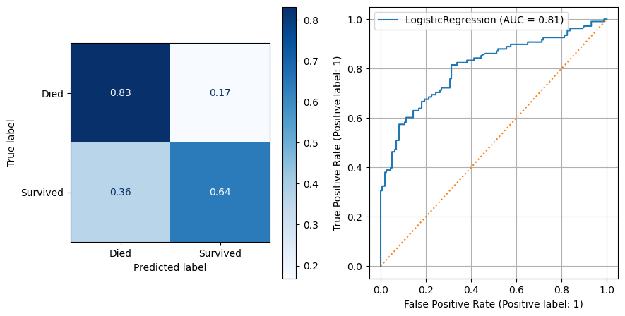
How to select the best values for our LogisticRegression’s hyperparameters#
Hyperparameter Tuning: GridSearchCV#
C = regularization strenght (inverse)
penalty: ‘l1’,’l2’,’elasticnet’
solver: (see below)
solver Parameter#
https://scikit-learn.org/stable/modules/linear_model.html#logistic-regression
The solvers implemented in the class LogisticRegression are “liblinear”, “newton-cg”, “lbfgs”, “sag” and “saga”:
The solver “liblinear” uses a coordinate descent (CD) algorithm, and relies on the excellent C++ LIBLINEAR library, which is shipped with scikit-learn. However, the CD algorithm implemented in liblinear cannot learn a true multinomial (multiclass) model; instead, the optimization problem is decomposed in a “one-vs-rest” fashion so separate binary classifiers are trained for all classes. This happens under the hood, so LogisticRegression instances using this solver behave as multiclass classifiers.
import warnings
warnings.filterwarnings('ignore')
from sklearn.model_selection import GridSearchCV, RandomizedSearchCV
params = {'C':[0.001, 0.01, 0.1, 1, 10, 100,1e6,1e12],
'penalty':['l1','l2','elastic_net'],
'solver':["liblinear", "newton-cg", "lbfgs", "sag","saga"],}
## make gridseach
log_reg = LogisticRegression()
params = {'C':[0.001, 0.01, 0.1, 1, 10, 100,1e6,1e12],
'penalty':['l1','l2','elastic_net'],
'solver':["liblinear", "newton-cg", "lbfgs", "sag","saga"],}
gridsearch = GridSearchCV(log_reg,params,)
gridsearch
GridSearchCV(estimator=LogisticRegression(),
param_grid={'C': [0.001, 0.01, 0.1, 1, 10, 100, 1000000.0,
1000000000000.0],
'penalty': ['l1', 'l2', 'elastic_net'],
'solver': ['liblinear', 'newton-cg', 'lbfgs', 'sag',
'saga']})
## fit grid and show best_params
gridsearch.fit(X_train_tf, y_train)
gridsearch.best_params_
{'C': 0.1, 'penalty': 'l2', 'solver': 'liblinear'}
## get best_esinmtaor_
gridsearch.best_estimator_
LogisticRegression(C=0.1, solver='liblinear')
## use our evaluate function with the best model
evaluate_classification(gridsearch.best_estimator_,X_test_tf,y_test)
------------------------------------------------------------
[i] CLASSIFICATION REPORT
------------------------------------------------------------
precision recall f1-score support
0 0.76 0.84 0.80 160
1 0.73 0.61 0.66 108
accuracy 0.75 268
macro avg 0.74 0.73 0.73 268
weighted avg 0.75 0.75 0.75 268
------------------------------------------------------------
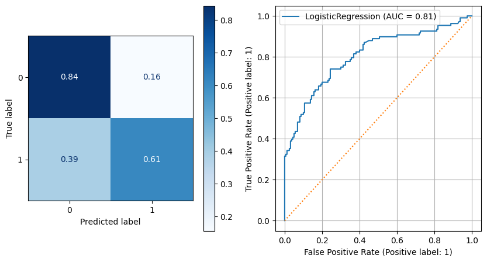
# params = dict(C=1e5, solver='liblinear')
log_reg = LogisticRegression(C=1e12)#**params)
log_reg.fit(X_train_tf, y_train)
evaluate_classification(log_reg,X_test_tf,y_test);#,label=str(params));
------------------------------------------------------------
[i] CLASSIFICATION REPORT
------------------------------------------------------------
precision recall f1-score support
0 0.77 0.83 0.80 160
1 0.72 0.64 0.68 108
accuracy 0.75 268
macro avg 0.75 0.74 0.74 268
weighted avg 0.75 0.75 0.75 268
------------------------------------------------------------
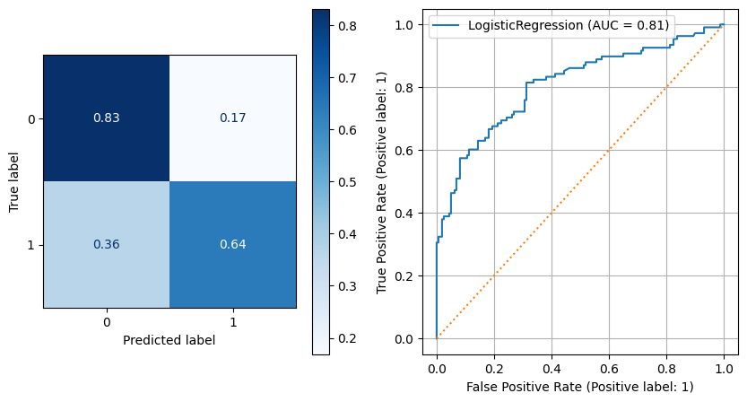
What about if we wanted better recall?#
All named scoring options in sklearn: - https://scikit-learn.org/stable/modules/model_evaluation.html#common-cases-predefined-values
### paste our code and change scoring='recall'
## make gridseach
log_reg = LogisticRegression()
params = {'C':[0.001, 0.01, 0.1, 1, 10, 100,1e6,1e12],
'penalty':['l1','l2','elastic_net'],
'solver':["liblinear", "newton-cg", "lbfgs", "sag","saga"],}
gridsearch = GridSearchCV(log_reg,params,scoring='roc_auc')
gridsearch.fit(X_train_tf, y_train)
gridsearch.best_params_
{'C': 0.01, 'penalty': 'l2', 'solver': 'sag'}
## evaluate
evaluate_classification(gridsearch.best_estimator_,X_test_tf,y_test)
------------------------------------------------------------
[i] CLASSIFICATION REPORT
------------------------------------------------------------
precision recall f1-score support
0 0.65 0.98 0.78 160
1 0.89 0.22 0.36 108
accuracy 0.68 268
macro avg 0.77 0.60 0.57 268
weighted avg 0.75 0.68 0.61 268
------------------------------------------------------------
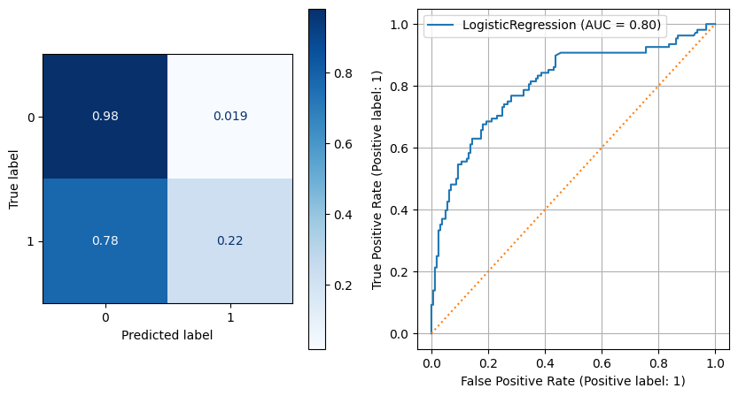
Class Imbalance#
Class Imbalance Problems Lab#
df = pd.read_csv('creditcard.csv.gz')
df
| Time | V1 | V2 | V3 | V4 | V5 | V6 | V7 | V8 | V9 | ... | V21 | V22 | V23 | V24 | V25 | V26 | V27 | V28 | Amount | Class | |
|---|---|---|---|---|---|---|---|---|---|---|---|---|---|---|---|---|---|---|---|---|---|
| 0 | 0.0 | -1.359807 | -0.072781 | 2.536347 | 1.378155 | -0.338321 | 0.462388 | 0.239599 | 0.098698 | 0.363787 | ... | -0.018307 | 0.277838 | -0.110474 | 0.066928 | 0.128539 | -0.189115 | 0.133558 | -0.021053 | 149.62 | 0 |
| 1 | 0.0 | 1.191857 | 0.266151 | 0.166480 | 0.448154 | 0.060018 | -0.082361 | -0.078803 | 0.085102 | -0.255425 | ... | -0.225775 | -0.638672 | 0.101288 | -0.339846 | 0.167170 | 0.125895 | -0.008983 | 0.014724 | 2.69 | 0 |
| 2 | 1.0 | -1.358354 | -1.340163 | 1.773209 | 0.379780 | -0.503198 | 1.800499 | 0.791461 | 0.247676 | -1.514654 | ... | 0.247998 | 0.771679 | 0.909412 | -0.689281 | -0.327642 | -0.139097 | -0.055353 | -0.059752 | 378.66 | 0 |
| 3 | 1.0 | -0.966272 | -0.185226 | 1.792993 | -0.863291 | -0.010309 | 1.247203 | 0.237609 | 0.377436 | -1.387024 | ... | -0.108300 | 0.005274 | -0.190321 | -1.175575 | 0.647376 | -0.221929 | 0.062723 | 0.061458 | 123.50 | 0 |
| 4 | 2.0 | -1.158233 | 0.877737 | 1.548718 | 0.403034 | -0.407193 | 0.095921 | 0.592941 | -0.270533 | 0.817739 | ... | -0.009431 | 0.798278 | -0.137458 | 0.141267 | -0.206010 | 0.502292 | 0.219422 | 0.215153 | 69.99 | 0 |
| ... | ... | ... | ... | ... | ... | ... | ... | ... | ... | ... | ... | ... | ... | ... | ... | ... | ... | ... | ... | ... | ... |
| 284802 | 172786.0 | -11.881118 | 10.071785 | -9.834783 | -2.066656 | -5.364473 | -2.606837 | -4.918215 | 7.305334 | 1.914428 | ... | 0.213454 | 0.111864 | 1.014480 | -0.509348 | 1.436807 | 0.250034 | 0.943651 | 0.823731 | 0.77 | 0 |
| 284803 | 172787.0 | -0.732789 | -0.055080 | 2.035030 | -0.738589 | 0.868229 | 1.058415 | 0.024330 | 0.294869 | 0.584800 | ... | 0.214205 | 0.924384 | 0.012463 | -1.016226 | -0.606624 | -0.395255 | 0.068472 | -0.053527 | 24.79 | 0 |
| 284804 | 172788.0 | 1.919565 | -0.301254 | -3.249640 | -0.557828 | 2.630515 | 3.031260 | -0.296827 | 0.708417 | 0.432454 | ... | 0.232045 | 0.578229 | -0.037501 | 0.640134 | 0.265745 | -0.087371 | 0.004455 | -0.026561 | 67.88 | 0 |
| 284805 | 172788.0 | -0.240440 | 0.530483 | 0.702510 | 0.689799 | -0.377961 | 0.623708 | -0.686180 | 0.679145 | 0.392087 | ... | 0.265245 | 0.800049 | -0.163298 | 0.123205 | -0.569159 | 0.546668 | 0.108821 | 0.104533 | 10.00 | 0 |
| 284806 | 172792.0 | -0.533413 | -0.189733 | 0.703337 | -0.506271 | -0.012546 | -0.649617 | 1.577006 | -0.414650 | 0.486180 | ... | 0.261057 | 0.643078 | 0.376777 | 0.008797 | -0.473649 | -0.818267 | -0.002415 | 0.013649 | 217.00 | 0 |
284807 rows × 31 columns
target = 'Class'
y = df[target].copy()
X = df.drop(columns=target).copy()
X_train, X_test, y_train, y_test = train_test_split(X, y, random_state=0)
y_train.value_counts(1)
0 0.998258
1 0.001742
Name: Class, dtype: float64
When metrics can be misleading…#
i.e. accuracy
# from sklearn
params = dict(fit_intercept=False,C=1e12, solver='liblinear')
regr = LogisticRegression(**params)#fit_intercept=False,C=1e12, solver='liblinear')
regr.fit(X_train, y_train)
regr.score(X_test,y_test)
0.9984691441251651
evaluate_classification(regr,X_test, y_test)#,label='Imbalanced');
------------------------------------------------------------
[i] CLASSIFICATION REPORT
------------------------------------------------------------
precision recall f1-score support
0 1.00 1.00 1.00 71082
1 0.54 0.56 0.55 120
accuracy 1.00 71202
macro avg 0.77 0.78 0.78 71202
weighted avg 1.00 1.00 1.00 71202
------------------------------------------------------------
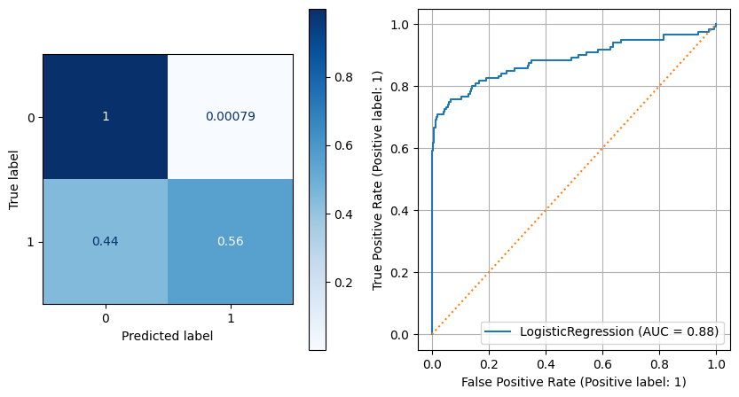
y_test.value_counts(normalize=True)
0 0.998315
1 0.001685
Name: Class, dtype: float64
Woohoo! We must have an amazing model!!…#
DummyClassifier for Dummies#
from sklearn.dummy import DummyClassifier
## Let's guess 0 for every observation
dummy = DummyClassifier(strategy='stratified')#,constant=0)
preds = dummy.fit(X_train,y_train).predict(X_test)
## How did we do?
dummy.score(X_test,y_test)
0.9965590854189489
evaluate_classification(dummy,X_test, y_test)#,label='Dummy');
------------------------------------------------------------
[i] CLASSIFICATION REPORT
------------------------------------------------------------
precision recall f1-score support
0 1.00 1.00 1.00 71082
1 0.00 0.00 0.00 120
accuracy 1.00 71202
macro avg 0.50 0.50 0.50 71202
weighted avg 1.00 1.00 1.00 71202
------------------------------------------------------------
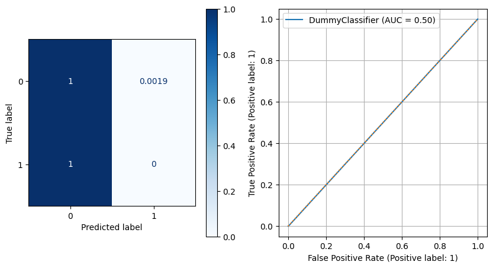
So what can we do?
Options for Dealing with Class Imbalance#
Using
class_weightparameterOversampling the minority class
Undersampling the majority class
## Baseline Model using lesson paras
regr = LogisticRegression(**params)
regr.fit(X_train, y_train)
evaluate_classification(regr,X_test,y_test)#,label="BASELINE" )
print(params)#str(params))
------------------------------------------------------------
[i] CLASSIFICATION REPORT
------------------------------------------------------------
precision recall f1-score support
0 1.00 1.00 1.00 71082
1 0.54 0.56 0.55 120
accuracy 1.00 71202
macro avg 0.77 0.78 0.78 71202
weighted avg 1.00 1.00 1.00 71202
------------------------------------------------------------
{'fit_intercept': False, 'C': 1000000000000.0, 'solver': 'liblinear'}
Solution 1: class_weight="balanced"#
params = dict(fit_intercept=False,C=1e12, solver='liblinear')
regr = LogisticRegression(class_weight='balanced',**params)
regr.fit(X_train, y_train)
evaluate_classification(regr,X_test,y_test)#,label='balanced')
------------------------------------------------------------
[i] CLASSIFICATION REPORT
------------------------------------------------------------
precision recall f1-score support
0 1.00 0.97 0.98 71082
1 0.05 0.91 0.09 120
accuracy 0.97 71202
macro avg 0.52 0.94 0.54 71202
weighted avg 1.00 0.97 0.98 71202
------------------------------------------------------------
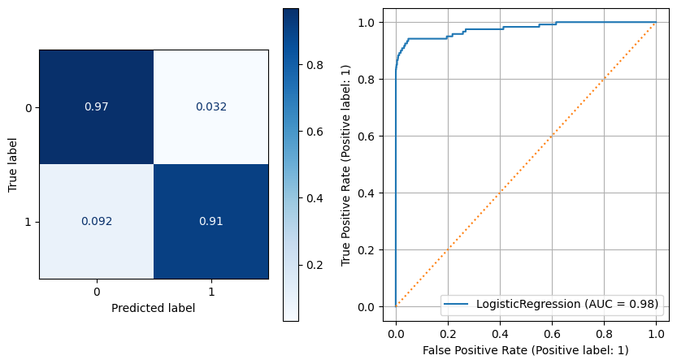
Solution 2: Oversampling minority class with SMOTE#
y_train.value_counts(0)
0 213233
1 372
Name: Class, dtype: int64
# !pip install -U imblearn
from imblearn.over_sampling import SMOTE,SMOTENC
smote = SMOTE()
X_train_smote, y_train_smote = smote.fit_resample(X_train,y_train)
pd.Series(y_train_smote).value_counts()
0 213233
1 213233
Name: Class, dtype: int64
regr = LogisticRegression(**params)#class_weight='balanced',C=1e5, solver='liblinear')
regr.fit(X_train_smote, y_train_smote)
evaluate_classification(regr,X_test,y_test)#,label='SMOTE')
------------------------------------------------------------
[i] CLASSIFICATION REPORT
------------------------------------------------------------
precision recall f1-score support
0 1.00 0.98 0.99 71082
1 0.07 0.88 0.13 120
accuracy 0.98 71202
macro avg 0.53 0.93 0.56 71202
weighted avg 1.00 0.98 0.99 71202
------------------------------------------------------------
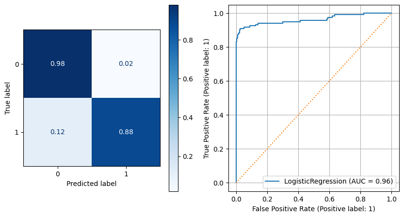
Solution 3: Undersampling majority class#
df_balance = pd.concat([X_train, y_train],axis=1)
df_balance
| Time | V1 | V2 | V3 | V4 | V5 | V6 | V7 | V8 | V9 | ... | V21 | V22 | V23 | V24 | V25 | V26 | V27 | V28 | Amount | Class | |
|---|---|---|---|---|---|---|---|---|---|---|---|---|---|---|---|---|---|---|---|---|---|
| 194763 | 130747.0 | 2.047163 | 0.107987 | -1.806515 | 0.072733 | 0.248371 | -1.744837 | 0.712448 | -0.488842 | -0.102709 | ... | 0.241017 | 0.822618 | 0.023000 | 0.549868 | 0.322173 | 0.191755 | -0.085025 | -0.084292 | 0.77 | 0 |
| 135660 | 81344.0 | 1.282404 | 0.459864 | -0.372286 | 0.826375 | 0.463568 | -0.466407 | 0.460867 | -0.186469 | -0.549700 | ... | 0.013986 | 0.083896 | -0.247504 | -0.325527 | 0.927293 | -0.272555 | -0.010168 | -0.005332 | 1.79 | 0 |
| 259186 | 159004.0 | -0.414863 | 0.012026 | 1.356386 | 1.107374 | 0.813456 | -0.156497 | -0.372675 | 0.031095 | -0.100143 | ... | -0.052272 | -0.088160 | 0.062521 | -0.680805 | -0.641474 | -0.159995 | 0.237628 | 0.204343 | 5.95 | 0 |
| 87387 | 61662.0 | -1.432948 | 1.478076 | 0.576724 | 0.207540 | -0.670662 | -0.464572 | 0.221023 | -0.099811 | 1.561896 | ... | -0.055014 | 0.364330 | 0.154670 | 0.635611 | -0.366314 | 0.163690 | -0.750285 | -0.275117 | 9.20 | 0 |
| 267282 | 162703.0 | 2.051016 | -0.016765 | -2.284865 | 0.302168 | 0.786895 | -0.998558 | 0.768990 | -0.464383 | 0.362863 | ... | 0.133331 | 0.491780 | -0.119020 | 0.527179 | 0.607105 | -0.090453 | -0.065787 | -0.062680 | 47.53 | 0 |
| ... | ... | ... | ... | ... | ... | ... | ... | ... | ... | ... | ... | ... | ... | ... | ... | ... | ... | ... | ... | ... | ... |
| 211543 | 138459.0 | -1.321976 | 1.138686 | -0.940861 | 0.154160 | 0.109802 | -0.538822 | 0.490058 | 0.513762 | -0.493834 | ... | -0.012778 | -0.237503 | 0.008713 | -0.767844 | -0.397162 | 0.316379 | -0.463125 | -0.010589 | 49.89 | 0 |
| 86293 | 61167.0 | -0.627810 | 0.918729 | 1.478453 | 0.213171 | 0.933695 | 1.261486 | 0.504752 | 0.404286 | -0.939740 | ... | -0.051356 | -0.004245 | 0.090535 | -0.964599 | -0.522294 | 0.296733 | 0.145939 | 0.110400 | 24.99 | 0 |
| 122579 | 76616.0 | 1.512602 | -0.949435 | -0.219062 | -1.638850 | -0.856348 | -0.465996 | -0.669193 | -0.135566 | -2.284345 | ... | -0.558803 | -1.377240 | 0.080444 | -0.579511 | 0.297851 | -0.495367 | -0.001415 | 0.003665 | 34.90 | 0 |
| 152315 | 97253.0 | 1.798863 | -1.699791 | -0.142182 | -0.619533 | -1.570248 | 0.083268 | -1.501980 | 0.176287 | 1.755507 | ... | 0.181914 | 0.351358 | 0.115638 | -0.566188 | -0.596200 | -0.295152 | -0.033616 | -0.032471 | 171.31 | 0 |
| 117952 | 74887.0 | -0.589400 | 0.747828 | 1.784781 | 0.899612 | 0.257067 | -0.001301 | 0.122334 | 0.034736 | -0.283998 | ... | -0.008910 | 0.000367 | -0.238139 | -0.463529 | -0.243573 | -0.370920 | 0.086592 | 0.118084 | 15.99 | 0 |
213605 rows × 31 columns
n_samples = df_balance['Class'].value_counts().min()
n_samples
372
df_balance.groupby('Class').groups.keys()
dict_keys([0, 1])
df_resample = pd.DataFrame()
for grp,idx in df_balance.groupby('Class').groups.items():
resample = df_balance.loc[idx].sample(n=n_samples,random_state=123)
df_resample = pd.concat([df_resample,resample],axis=0)
display(df_resample.head(), df_resample["Class"].value_counts())
| Time | V1 | V2 | V3 | V4 | V5 | V6 | V7 | V8 | V9 | ... | V21 | V22 | V23 | V24 | V25 | V26 | V27 | V28 | Amount | Class | |
|---|---|---|---|---|---|---|---|---|---|---|---|---|---|---|---|---|---|---|---|---|---|
| 230178 | 146225.0 | -1.471584 | 1.048034 | -0.121530 | 0.294235 | 1.008532 | 6.129592 | -3.153504 | -1.929004 | 1.661659 | ... | 4.157237 | 0.048731 | 0.680405 | 0.668165 | -1.277351 | -0.467549 | 0.527242 | 0.278444 | 1.00 | 0 |
| 247695 | 153661.0 | 2.096084 | -1.376627 | 0.194561 | -0.715901 | -1.553168 | 0.431772 | -1.763065 | 0.331340 | 0.865917 | ... | 0.151258 | 0.704155 | 0.173941 | -0.470474 | -0.324661 | -0.177678 | 0.055154 | -0.053309 | 3.20 | 0 |
| 204626 | 135369.0 | 1.863445 | -0.981573 | -0.694210 | -0.857710 | -0.806651 | -0.232154 | -0.772867 | 0.156154 | 1.461948 | ... | 0.261563 | 0.644129 | 0.164242 | 0.746726 | -0.436316 | 0.651170 | -0.064889 | -0.045237 | 80.10 | 0 |
| 13793 | 24459.0 | -0.888568 | 1.220439 | 1.253009 | 0.741607 | 0.414096 | -0.072251 | 1.186912 | -0.623745 | 1.231374 | ... | -0.152703 | 0.387293 | -0.174805 | -0.045627 | -0.214310 | -0.434546 | -0.184802 | -0.165824 | 61.81 | 0 |
| 244902 | 152535.0 | 1.973384 | -0.235705 | -0.453193 | 0.238827 | -0.313211 | -0.236997 | -0.408025 | -0.007399 | 0.809414 | ... | -0.187040 | -0.377358 | 0.318120 | -0.426956 | -0.378039 | -0.662360 | 0.033402 | -0.043114 | 7.81 | 0 |
5 rows × 31 columns
0 372
1 372
Name: Class, dtype: int64
X_train_under = df_resample.drop('Class',axis=1).copy()
y_train_under = df_resample['Class'].copy()
regr = LogisticRegression(**params)#C=1e5, solver='liblinear')
regr.fit(X_train_under, y_train_under)
evaluate_classification(regr,X_test,y_test)
------------------------------------------------------------
[i] CLASSIFICATION REPORT
------------------------------------------------------------
precision recall f1-score support
0 1.00 0.96 0.98 71082
1 0.04 0.93 0.07 120
accuracy 0.96 71202
macro avg 0.52 0.94 0.53 71202
weighted avg 1.00 0.96 0.98 71202
------------------------------------------------------------
APPENDIX#
Additional ROC Curve#
What Distributions Would Work Well in Classifying?#

Defining the Threshold#

# # Interactive ROC curve
# from IPython.display import IFrame
# IFrame('http://www.navan.name/roc/', width=800, height=600)